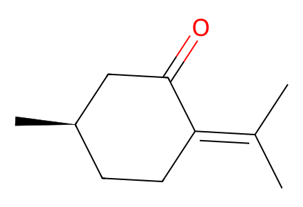
CC(C)=C1CC[C@@H](C)CC1=OMain synthetic figures3,6,7 and SI10–30 experimental preparations, including S1 and alternative cyclizations. Source-isolated preparations covered; perspective diol13 stereochemistry pending. Facts compiled deterministically; independent review pending.
完整 JSON · 逐步 CSV · 路线序列 · SDF · HRMS 核对
| 事件 | 分子连接 | 报告产率 | Canonical reaction SMILES |
|---|---|---|---|
| E01 | 10 + Mander reagent → 11 + C5-epi-11 | 85% combined mixture yield | CC(C)=C1CC[C@@H](C)CC1=O.CCOC(=O)C#N>>CCOC(=O)[C@@]1(C)C(=O)C(=C(C)C)CC[C@H]1C.CCOC(=O)[C@]1(C)C(=O)C(=C(C)C)CC[C@H]1C |
| E02 | 11 + C5-epi-11 → 9a + 9b | 9a: 57%; 9b: 6% | CCOC(=O)[C@@]1(C)C(=O)C(=C(C)C)CC[C@H]1C.CCOC(=O)[C@]1(C)C(=O)C(=C(C)C)CC[C@H]1C>>C=C(C)[C@@H]1CC[C@@H](C)[C@@](C)(CO[Si](C)(C)C(C)(C)C)C1=O.CC(C)=C1CC[C@@H](C)[C@@](C)(CO[Si](C)(C)C(C)(C)C)C1=O |
| E03 | 9a + 9b + methyl acrylate → 8 | 8: 90% | C=C(C)[C@@H]1CC[C@@H](C)[C@@](C)(CO[Si](C)(C)C(C)(C)C)C1=O.C=CC(=O)OC.CC(C)=C1CC[C@@H](C)[C@@](C)(CO[Si](C)(C)C(C)(C)C)C1=O>>C=C(C)[C@@]1(CCC(=O)OC)CC[C@@H](C)[C@@](C)(CO[Si](C)(C)C(C)(C)C)C1=O |
| E04 | 11 + methyl acrylate → S1 | S1: 57% | C=CC(=O)OC.CCOC(=O)[C@@]1(C)C(=O)C(=C(C)C)CC[C@H]1C>>C=C(C)[C@]1(CCC(=O)OC)CC[C@@H](C)[C@@](C)(C(=O)OCC)C1=O |
| E05 | 8 → 13 + 14 | 13: 21%; 14: 47% | C=C(C)[C@@]1(CCC(=O)OC)CC[C@@H](C)[C@@](C)(CO[Si](C)(C)C(C)(C)C)C1=O>>C=C(C)[C@]12CCC(=O)C1(O)[C@](C)(CO[Si](C)(C)C(C)(C)C)[C@H](C)CC2.C=C(C)[C@]12CCC(O)C1(O)[C@](C)(CO[Si](C)(C)C(C)(C)C)[C@H](C)CC2 |
| E06 | 13 → 14 | 14: 60% | C=C(C)[C@]12CCC(O)C1(O)[C@](C)(CO[Si](C)(C)C(C)(C)C)[C@H](C)CC2>>C=C(C)[C@]12CCC(=O)C1(O)[C@](C)(CO[Si](C)(C)C(C)(C)C)[C@H](C)CC2 |
| E07 | 14 → 7 | 7: 75% | C=C(C)[C@]12CCC(=O)C1(O)[C@](C)(CO[Si](C)(C)C(C)(C)C)[C@H](C)CC2>>C=C(C)[C@]12CCC(=O)[C@H]1[C@](C)(CO[Si](C)(C)C(C)(C)C)[C@H](C)CC2 |
| E08 | 7 → C10-epi-6 | C10-epi-6: 70% | C=C(C)[C@]12CCC(=O)[C@H]1[C@](C)(CO[Si](C)(C)C(C)(C)C)[C@H](C)CC2>>C[C@@H]1CC[C@@]2([C@H](C)CBr)CCC(=O)[C@H]2[C@]1(C)C=O |
| E09 | 7 → 15 + C10-epi-15 | 60% combined mixture yield | C=C(C)[C@]12CCC(=O)[C@H]1[C@](C)(CO[Si](C)(C)C(C)(C)C)[C@H](C)CC2>>C[C@@H]1CC[C@@]2([C@@H](C)CO)CCC(=O)[C@H]2[C@]1(C)CO[Si](C)(C)C(C)(C)C.C[C@@H]1CC[C@@]2([C@H](C)CO)CCC(=O)[C@H]2[C@]1(C)CO[Si](C)(C)C(C)(C)C |
| E10 | 15 → 16 | 16: 95% | C[C@@H]1CC[C@@]2([C@@H](C)CO)CCC(=O)[C@H]2[C@]1(C)CO[Si](C)(C)C(C)(C)C>>CC(=O)OC[C@H](C)[C@]12CCC(=O)[C@H]1[C@](C)(CO[Si](C)(C)C(C)(C)C)[C@H](C)CC2 |
| E11 | 16 → 17 | 17: 90% | CC(=O)OC[C@H](C)[C@]12CCC(=O)[C@H]1[C@](C)(CO[Si](C)(C)C(C)(C)C)[C@H](C)CC2>>CC(=O)OC[C@H](C)[C@]12CCC(=O)[C@H]1[C@](C)(C=O)[C@H](C)CC2 |
| E12 | 17 + methallyl bromide → 18 | 90% combined mixture yield | C=C(C)CBr.CC(=O)OC[C@H](C)[C@]12CCC(=O)[C@H]1[C@](C)(C=O)[C@H](C)CC2>>C=C(C)C[C@@H](O)[C@]1(C)[C@H](C)CC[C@@]2([C@@H](C)COC(C)=O)CCC(=O)[C@H]21 |
| E13 | 18 → 19 | 19: 94% | C=C(C)C[C@@H](O)[C@]1(C)[C@H](C)CC[C@@]2([C@@H](C)COC(C)=O)CCC(=O)[C@H]21>>C=C(C)C[C@@H](O)[C@]1(C)[C@H](C)CC[C@@]2([C@@H](C)CO)CCC(=O)[C@H]21 |
| E14 | 19 + cis-diacetoxybutene → 20 | 20: 52% | C=C(C)C[C@@H](O)[C@]1(C)[C@H](C)CC[C@@]2([C@@H](C)CO)CCC(=O)[C@H]21.CC(=O)OC/C=C\COC(C)=O>>CC(=O)OC/C=C(\C)C[C@@H](O)[C@]1(C)[C@H](C)CC[C@@]2([C@@H](C)CO)CCC(=O)[C@H]21 |
| E15 | 20 → 21 | 21: 82% | CC(=O)OC/C=C(\C)C[C@@H](O)[C@]1(C)[C@H](C)CC[C@@]2([C@@H](C)CO)CCC(=O)[C@H]21>>CC(=O)OC/C=C(\C)C[C@@H](O)[C@]1(C)[C@H](C)CC[C@@]2([C@@H](C)C=O)CCC(=O)[C@H]21 |
| E16 | 21 → 22 | 22: 70% | CC(=O)OC/C=C(\C)C[C@@H](O)[C@]1(C)[C@H](C)CC[C@@]2([C@@H](C)C=O)CCC(=O)[C@H]21>>C/C(=C\CO)C[C@@H](O)[C@]1(C)[C@H](C)CC[C@@]2([C@@H](C)C=O)CCC(=O)[C@H]21 |
| E17 | 22 → 5 | not reported | C/C(=C\CO)C[C@@H](O)[C@]1(C)[C@H](C)CC[C@@]2([C@@H](C)C=O)CCC(=O)[C@H]21>>C/C(=C\CCl)C[C@@H](O)[C@]1(C)[C@H](C)CC[C@@]2([C@@H](C)C=O)CCC(=O)[C@H]21 |
| E18 | 5 → 2 + 23 | 2: 30%; 23: 36% | C/C(=C\CCl)C[C@@H](O)[C@]1(C)[C@H](C)CC[C@@]2([C@@H](C)C=O)CCC(=O)[C@H]21>>C=C[C@@]1(C)C[C@@H](O)[C@]2(C)[C@H](C)CC[C@]3(CCC(=O)[C@H]32)[C@@H](C)[C@@H]1O.C=C[C@]1(C)C[C@@H](O)[C@]2(C)[C@H](C)CC[C@]3(CCC(=O)[C@H]32)[C@@H](C)[C@@H]1O |
| E19 | 5 → 23 | 23: 60% | C/C(=C\CCl)C[C@@H](O)[C@]1(C)[C@H](C)CC[C@@]2([C@@H](C)C=O)CCC(=O)[C@H]21>>C=C[C@@]1(C)C[C@@H](O)[C@]2(C)[C@H](C)CC[C@]3(CCC(=O)[C@H]32)[C@@H](C)[C@@H]1O |
| E20 | 2 → 24 | 24: 90% | C=C[C@]1(C)C[C@@H](O)[C@]2(C)[C@H](C)CC[C@]3(CCC(=O)[C@H]32)[C@@H](C)[C@@H]1O>>C=C[C@]1(C)C[C@@H](O)[C@]2(C)[C@H](C)CC[C@]3(CCC(=O)[C@H]32)[C@@H](C)[C@@H]1OC(=O)C(F)(F)F |
| E21 | 24 + trifluoroacetoxyacetic acid → 1 | 1: 82% | C=C[C@]1(C)C[C@@H](O)[C@]2(C)[C@H](C)CC[C@]3(CCC(=O)[C@H]32)[C@@H](C)[C@@H]1OC(=O)C(F)(F)F.O=C(O)COC(=O)C(F)(F)F>>C=C[C@]1(C)C[C@@H](OC(=O)CO)[C@]2(C)[C@H](C)CC[C@]3(CCC(=O)[C@H]32)[C@@H](C)[C@@H]1O |
| E22 | 21 → 20 | not reported | CC(=O)OC/C=C(\C)C[C@@H](O)[C@]1(C)[C@H](C)CC[C@@]2([C@@H](C)C=O)CCC(=O)[C@H]21>>CC(=O)OC/C=C(\C)C[C@@H](O)[C@]1(C)[C@H](C)CC[C@@]2([C@@H](C)CO)CCC(=O)[C@H]21 |

CC(C)=C1CC[C@@H](C)CC1=O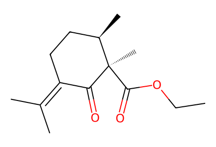
CCOC(=O)[C@@]1(C)C(=O)C(=C(C)C)CC[C@H]1C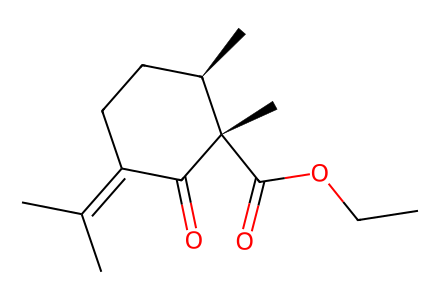
CCOC(=O)[C@]1(C)C(=O)C(=C(C)C)CC[C@H]1C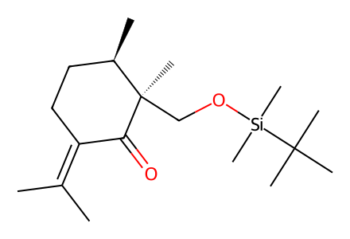
CC(C)=C1CC[C@@H](C)[C@@](C)(CO[Si](C)(C)C(C)(C)C)C1=O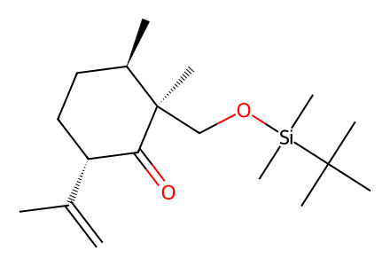
C=C(C)[C@@H]1CC[C@@H](C)[C@@](C)(CO[Si](C)(C)C(C)(C)C)C1=O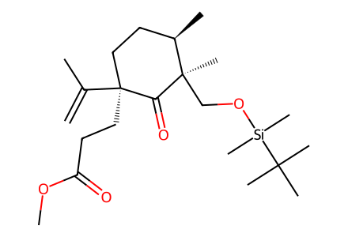
C=C(C)[C@@]1(CCC(=O)OC)CC[C@@H](C)[C@@](C)(CO[Si](C)(C)C(C)(C)C)C1=O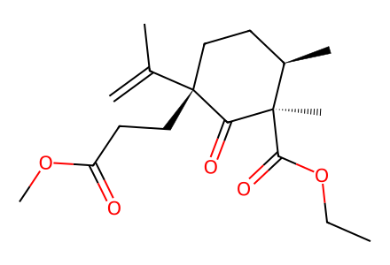
C=C(C)[C@]1(CCC(=O)OC)CC[C@@H](C)[C@@](C)(C(=O)OCC)C1=O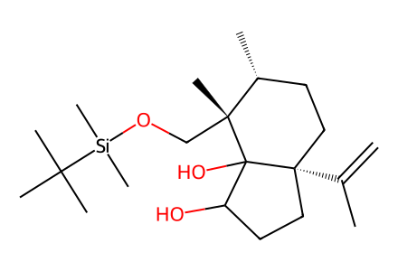
C=C(C)[C@]12CCC(O)C1(O)[C@](C)(CO[Si](C)(C)C(C)(C)C)[C@H](C)CC2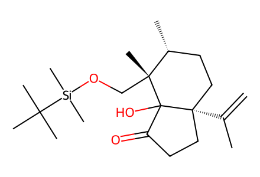
C=C(C)[C@]12CCC(=O)C1(O)[C@](C)(CO[Si](C)(C)C(C)(C)C)[C@H](C)CC2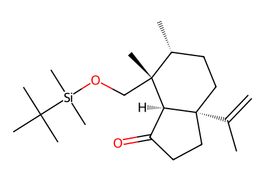
C=C(C)[C@]12CCC(=O)[C@H]1[C@](C)(CO[Si](C)(C)C(C)(C)C)[C@H](C)CC2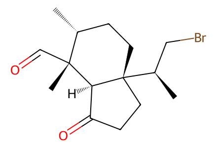
C[C@@H]1CC[C@@]2([C@H](C)CBr)CCC(=O)[C@H]2[C@]1(C)C=O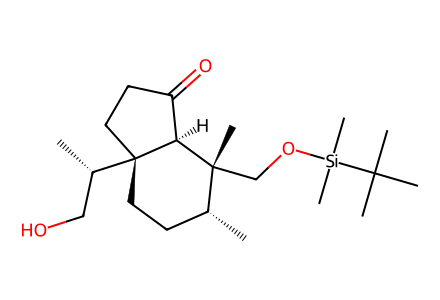
C[C@@H]1CC[C@@]2([C@@H](C)CO)CCC(=O)[C@H]2[C@]1(C)CO[Si](C)(C)C(C)(C)C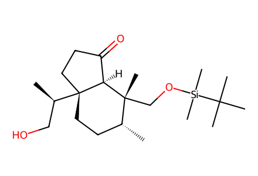
C[C@@H]1CC[C@@]2([C@H](C)CO)CCC(=O)[C@H]2[C@]1(C)CO[Si](C)(C)C(C)(C)C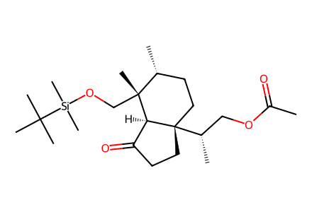
CC(=O)OC[C@H](C)[C@]12CCC(=O)[C@H]1[C@](C)(CO[Si](C)(C)C(C)(C)C)[C@H](C)CC2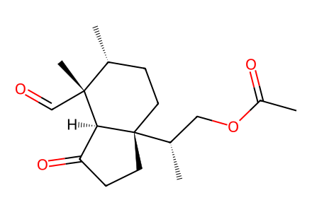
CC(=O)OC[C@H](C)[C@]12CCC(=O)[C@H]1[C@](C)(C=O)[C@H](C)CC2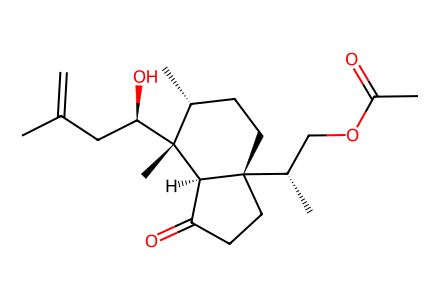
C=C(C)C[C@@H](O)[C@]1(C)[C@H](C)CC[C@@]2([C@@H](C)COC(C)=O)CCC(=O)[C@H]21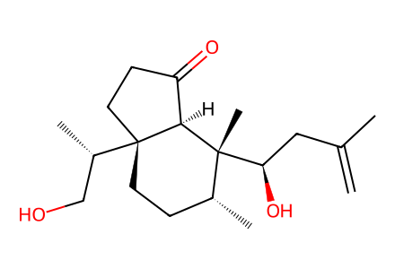
C=C(C)C[C@@H](O)[C@]1(C)[C@H](C)CC[C@@]2([C@@H](C)CO)CCC(=O)[C@H]21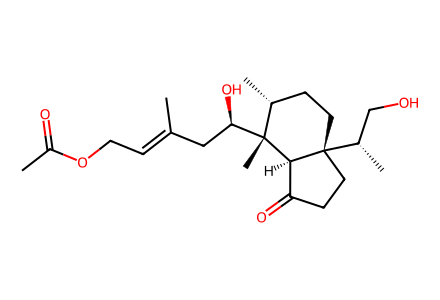
CC(=O)OC/C=C(\C)C[C@@H](O)[C@]1(C)[C@H](C)CC[C@@]2([C@@H](C)CO)CCC(=O)[C@H]21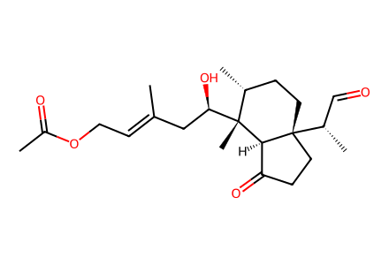
CC(=O)OC/C=C(\C)C[C@@H](O)[C@]1(C)[C@H](C)CC[C@@]2([C@@H](C)C=O)CCC(=O)[C@H]21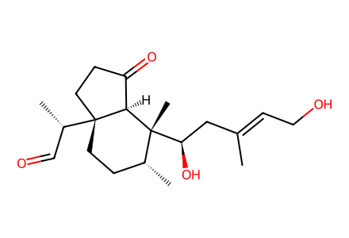
C/C(=C\CO)C[C@@H](O)[C@]1(C)[C@H](C)CC[C@@]2([C@@H](C)C=O)CCC(=O)[C@H]21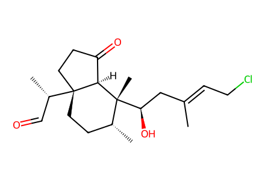
C/C(=C\CCl)C[C@@H](O)[C@]1(C)[C@H](C)CC[C@@]2([C@@H](C)C=O)CCC(=O)[C@H]21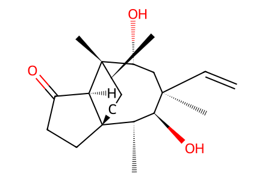
C=C[C@]1(C)C[C@@H](O)[C@]2(C)[C@H](C)CC[C@]3(CCC(=O)[C@H]32)[C@@H](C)[C@@H]1O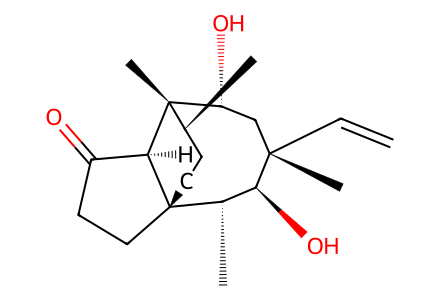
C=C[C@@]1(C)C[C@@H](O)[C@]2(C)[C@H](C)CC[C@]3(CCC(=O)[C@H]32)[C@@H](C)[C@@H]1O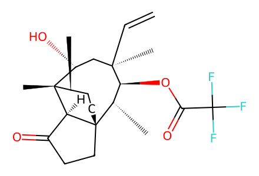
C=C[C@]1(C)C[C@@H](O)[C@]2(C)[C@H](C)CC[C@]3(CCC(=O)[C@H]32)[C@@H](C)[C@@H]1OC(=O)C(F)(F)F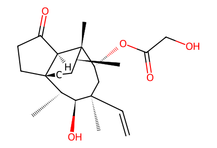
C=C[C@]1(C)C[C@@H](OC(=O)CO)[C@]2(C)[C@H](C)CC[C@]3(CCC(=O)[C@H]32)[C@@H](C)[C@@H]1O
CCOC(=O)C#N
C=CC(=O)OC
C=C(C)CBr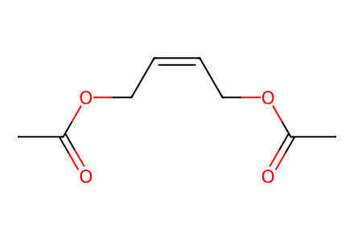
CC(=O)OC/C=C\COC(C)=O
O=C(O)COC(=O)C(F)(F)F